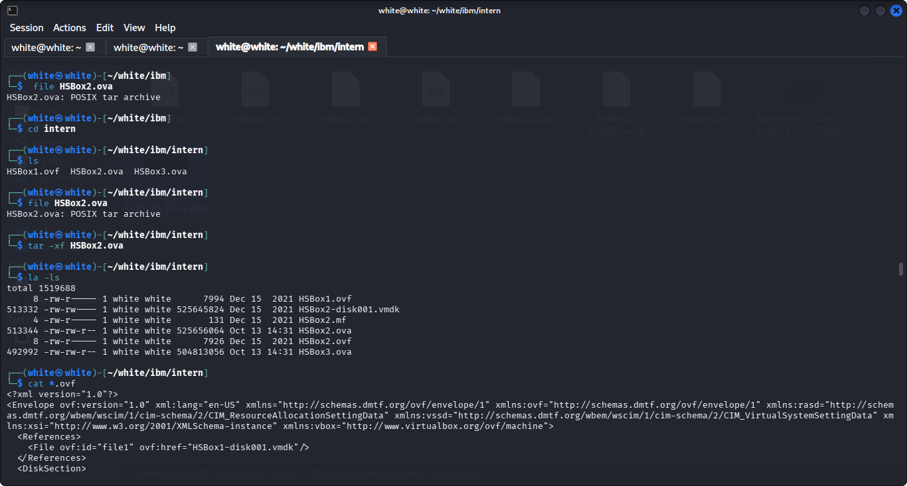
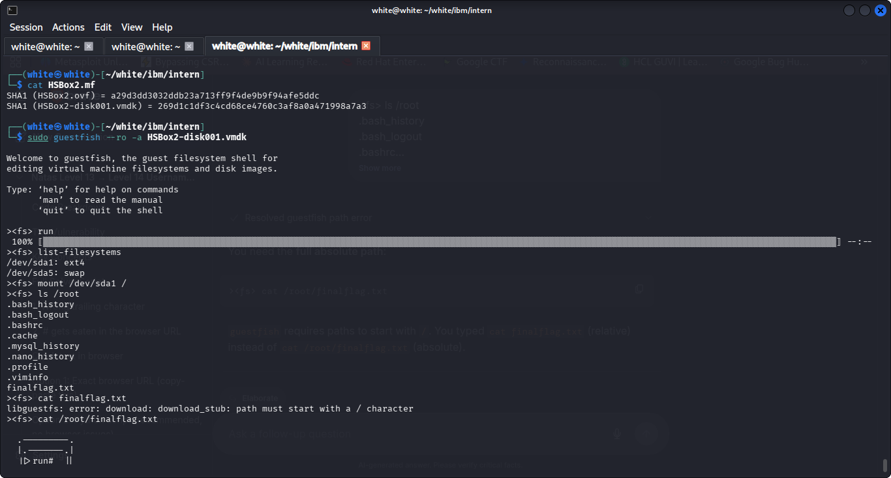
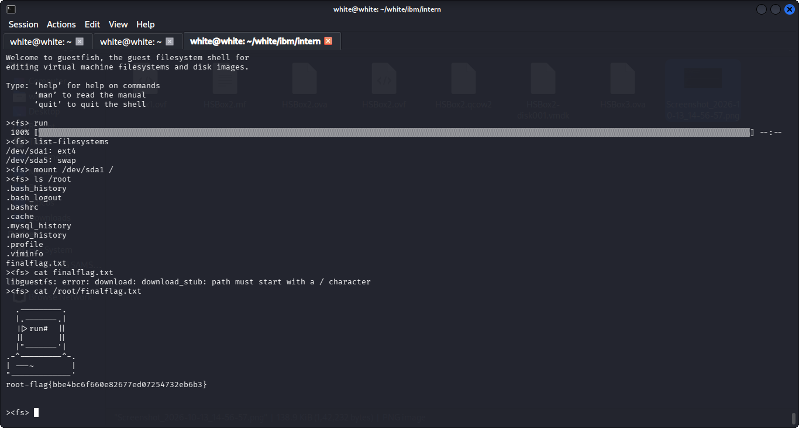

The objective of this investigation is to conduct offline forensics on the virtual appliance HSBox2.ova to extract hidden flags and identify user/attacker activities without booting the guest operating system.
guestfish --ro mounts the virtual disk directly in read-only mode inside a sandboxed QEMU appliance, ensuring complete cryptographic evidence preservation.
| Tool / Command | Function | Forensic Purpose |
|---|---|---|
file HSBox2.ova |
Container Identification | Verifies that the OVA package is a POSIX tar archive. |
tar -xf HSBox2.ova |
Package Extraction | Extracts the OVF descriptor, VMDK virtual disk, and SHA-1 manifest. |
guestfish --ro -a ... |
Read-Only Disk Shell | Provides safe command-line access to disk partitions without VM boot. |
An OVA file is an uncompressed tar archive containing VM configuration and disk components. We inspect, extract, and verify file integrity:

We initialize guestfish with --ro (read-only mode) to mount the ext4 partition at /dev/sda1:

Guestfish requires absolute paths starting with /. Relative paths trigger a download stub error. Running cat /root/finalflag.txt recovers the root flag:

Beyond capturing the flag, inspecting user history files in /root revealed anti-forensics activity and hardcoded database credentials:
.bash_history)truncate -s 0 on syslog, wildcard system logs, and apache2 access/error logs to eliminate intrusion traces..bash_history and reset the root password with passwd before rebooting..mysql_history)pumpkins was initialized on the host.admin@localhost with password admin@123.| Action | Guestfish Command |
|---|---|
| Attach disk (Read-Only) | sudo guestfish --ro -a <disk.vmdk> |
| Launch backend appliance | ><fs> run |
| Scan filesystems / partitions | ><fs> list-filesystems |
| Mount target partition | ><fs> mount /dev/sda1 / |
| List directory contents | ><fs> ls /root |
| Display file contents | ><fs> cat /root/finalflag.txt |
| Download file to host workstation | ><fs> download /root/finalflag.txt /tmp/flag.txt |
| Exit session | ><fs> exit |
| Forensic Artifact | Value / Evidence |
|---|---|
| Final Root Flag | root-flag{bbe4bc6f660e82677ed07254732eb6b3} |
| MySQL Database | pumpkins |
| MySQL Credentials | Username: admin | Password: admin@123 |
| Disk Manifest SHA-1 | 269d1c1df3c4cd68ce4760c3af8a0a471998a7a3 |